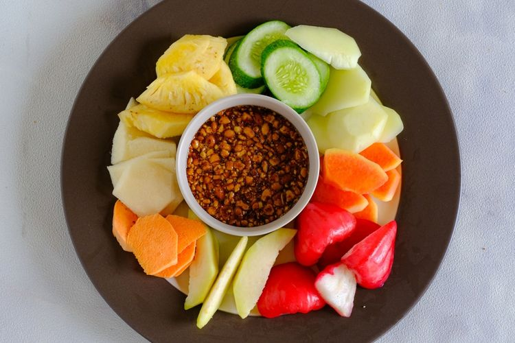

Ingredient
- Fruits, all kind, ripe/unripe but edible (tropical are better)
- coconut oil
- peanuts
- chili
- salt
- coconut sugar
Recipe
- Fried the peanuts with coconut oil
- ground the peanuts with salt, coconut sugar, and chili(optional)
- prepare the fruits and cut all of it then put it into the plate
- add them the sauce or garnish it separated